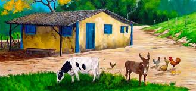
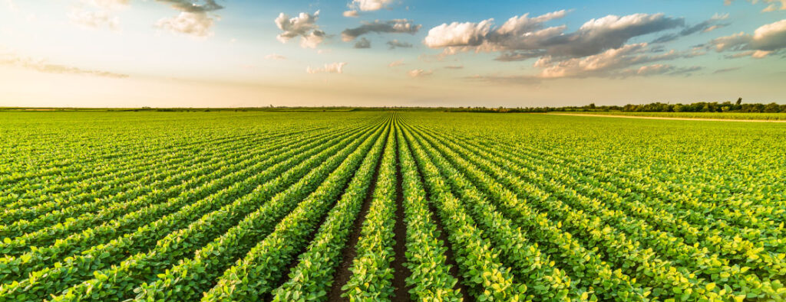

A vida na roça é uma experiência única e enriquecedora. Aqui você encontrará informações sobre a rotina diária, as atividades agrícolas e a vida em comunidade.
O dia a dia na roça
A vida na roça é de muito trabalho!
Independente disso, o trabalho sempre é árduo porque é dele que sai o sustento de toda família. A rotina de tarefas de quem vive na roça envolve até mesmo toda família e nem sempre é fácil. Existem as tarefas de plantio, cultivo e na colheita da safra.

Atividades agrícolas
atividade responsável pela produção de alimentos. A agricultura, termo de origem latina que significa “arte de cultivar os campos”, é uma atividade desenvolvida há milhares de anos. Seu principal objetivo é a produção de alimentos, tais como verduras, legumes, frutas, cereais, etc.
